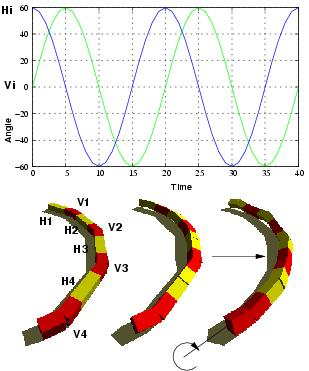

Next: 4 Rotating gait Up: 5 Locomotion capabilities Previous: 2 Turning gait


Next: 4
Rotating gait Up: 5
Locomotion capabilities Previous:
2
Turning gait
The robot can roll around its body
axis. The same sinusoidal signal is applied to all the vertical
joints and a ninety degrees out of phase sinusoidal signal is applied
to horizontal joints (Fig.
 ).
The amplitudes should be bigger than 60 (Av>60, Ah>60 ). The
results are the same obtained with the pitch-yaw-pitch minimal
configuration studied in [16].
).
The amplitudes should be bigger than 60 (Av>60, Ah>60 ). The
results are the same obtained with the pitch-yaw-pitch minimal
configuration studied in [16].
|
 |
|
Figure: The rolling gait. The same sinusoidal signal is applied to all the vertical joints and a ninety degrees out of phase sinusoidal signal is applied to horizontal joints
|